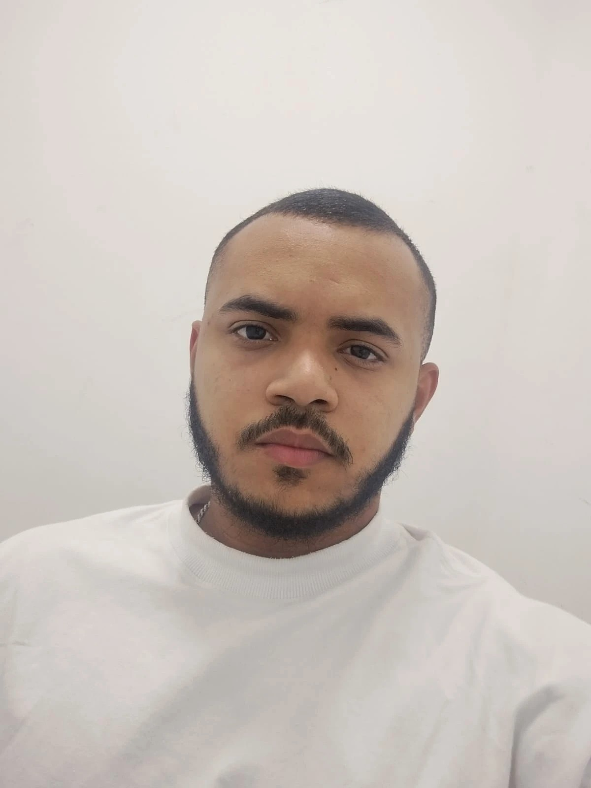

Andrey Oliveira · Saquarema, RJ
Sou o Andrey Oliveira, o DreyODev. Estudo Engenharia de Software e moro em Saquarema, na Região dos Lagos.
Faço sites e sistemas web de ponta a ponta: penso a página, escrevo o front-end e o back-end, monto o banco de dados e coloco tudo no ar.
A página pensada primeiro para o celular, a partir do que o negócio precisa mostrar.
HTML, CSS, TailwindA interface que o cliente do seu negócio vai usar, rápida e fácil de ler.
React, Next.js, TypeScript, JavaScriptFormulários, cadastros e painéis quando o site precisa guardar dados.
Node.js, Express, Python, FastAPI, PostgreSQLPublicação com domínio e hospedagem, e o site funcionando de verdade.
Vercel, Render, Supabase